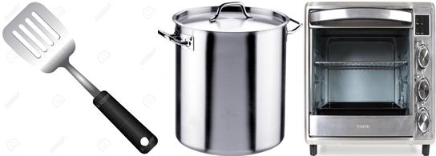
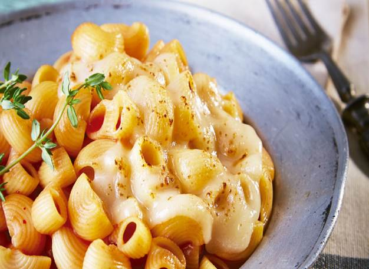

¿Quieres una opción distinta para acompañar tu comida?
Si estás buscando una opción diferente para acompañar el plato principal de tu comida, sigue el paso a paso de estos macarrones gratinados con queso manchego y perejil. Te encantará su sabor.
Ingredientes
1 Pure de tomate condimentado
1 Paquete de macarrones
100 gramos de queso manchego rallado
200 ml de leche
1 cda. de harina de trigo
2 cdas. de mantequilla
Sal y pimienta al gusto
1 cda. de perejil picado
Utensilios

Olla
Espátula
Horno
Modo de preparaciÓn
1 Hervir
En una olla con suficiente agua y sal, pon a hervir la pasta siguiendo las instrucciones del empaque.
2 Mezclar
Mezcla en una olla la leche con la harina; calienta sin dejar de mover. Añade una pizca de sal, con un poco de pimienta, la mantequilla y el pude de tomate.
3 Agregar
Agregar los macarrones y revuelva para que la salsa quede bien repartida.
4 Hornear
Añade el queso manchego rallado y gratina a 180°C en el horno.
4 Servir
Distribuye en los platos y espolvorea un poco de perejil antes de servir.

Tips para que tus macarrones queden deliciosos.
Tienes que elegir una pasta de calidad: aquella que no pueda sufrir roturas o apelmazarse durante la cocción. También verifica que sea un producto reciente y fresco. Evita usar pasta que tenga mucho tiempo almacenada en la alacena.
Recuerda que la porción correcta es de 1 litro de agua y 10 gramos sal por cada 100 gramos de pasta. Muévela durante la cocción para evitar que se apelmace.
No utilices aceite ni cubitos de caldo durante la cocción. Basta con la sal para que la pasta agarre sabor.
Una olla amplia también evitará que la pasta se apelmace.
La pasta debe echarse cuando el agua esté en ebullición. Mantén el fuego alto durante la cocción para evitar que el proceso se corte.
Utiliza una cuchara de madera para evitar que la pasta se pegue.
Escurre bien el agua, ¡y no la refresques! Lo único que lograrás echando un chorro de agua a la pasta será quitarle el sabor.
Integra la pasta inmediatamente con los ingredientes que la completan. Si es el caso, salte un poco en la sartén para mezclarla con la salsa o guarnición.